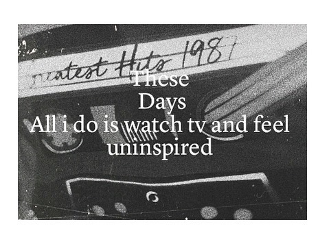
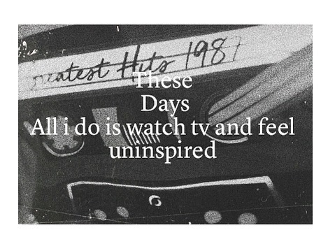
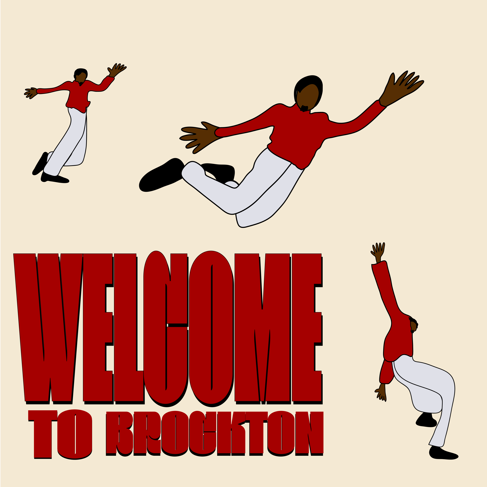
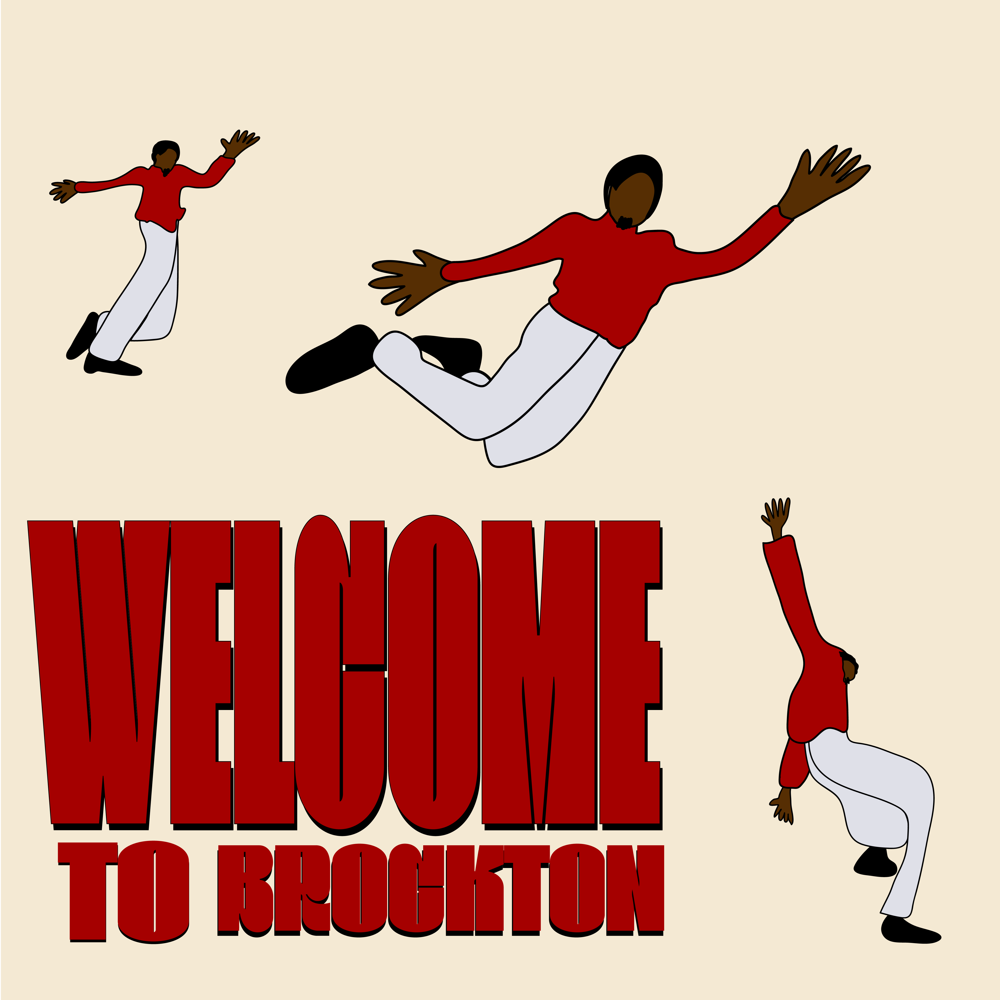
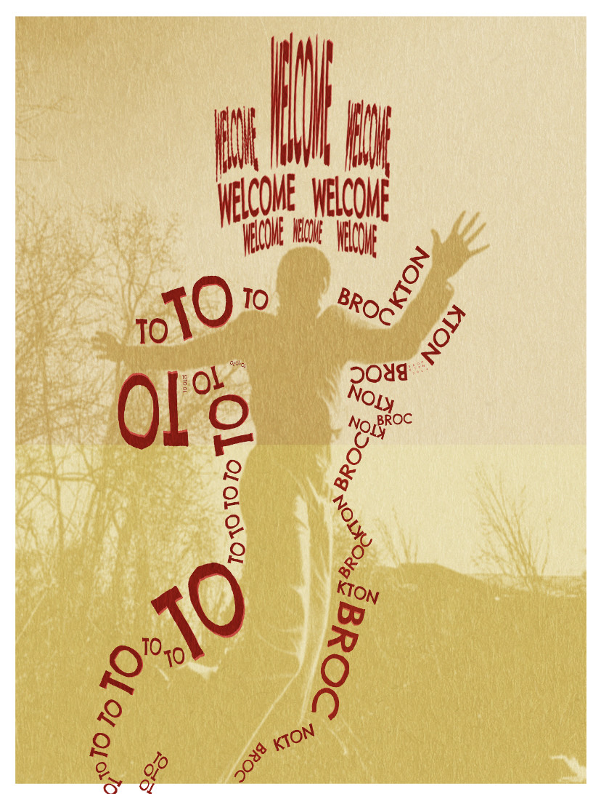
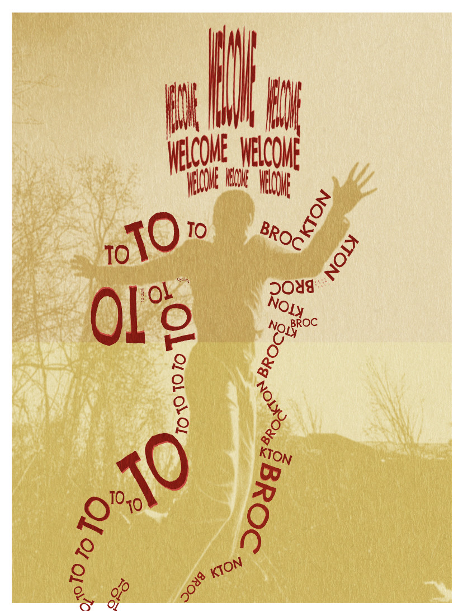

Timilehin Daramola.
Photographer, videographer & Sound designer

Who am I?
Timi Daramola is a Sophomore Audio video media production major at Howard community college . His passion for filmmaking, sound design, writing and storytelling come from his desire to communicate ideas to large audiences and effect change in creative and political spheres. He wrote and directed his first short film in partnership with his friend from boarding school. In all of his creative endeavors, Timi attempts to tie in his previous life experiences. An immigrant from Nigeria, Timi arrived in America in late 2022 after living in his home nation for the first 17 years of his life. Timi’s father is a psychiatrist, because of this Timi was often exposed to many of his father’s patients who captivated him with their ideas, stories and demeanors as a whole, this pushed him to tell stories rivalling those he heard at 5 years old. Outside of school and art he is passionate about his native Yoruba culture, and the different precolonial cultures in sub-Saharan Africa. Timi aims to continue his education in media studies and create art that makes an impact
Skills
Photography
Photoshop
Video Editing
Sound design
Script Writing
My Work
Photography
 

 


 

Contact Me
Let's get in touch. Send me a message: